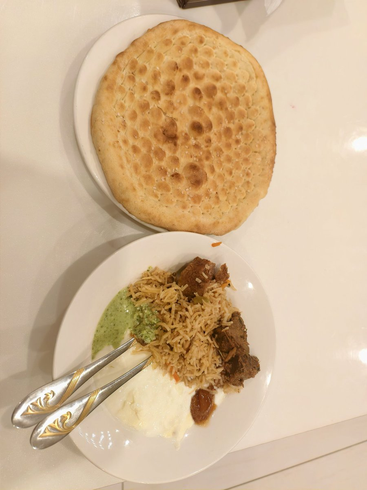
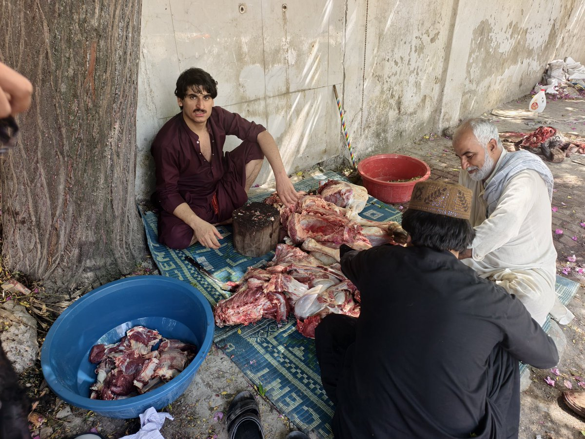

许白
@xubai_01
@wuerbangbang 好吓人..


吴二棒
@wuerbangbang
1️⃣（PETA警告⚠️）宰杀骆驼全过程；
2️⃣3️⃣Shehryar的午饭自助餐。虽然大差不差是相同的食物，但在这样的环境里还是看着跟前几天的巴扎不一样啊……
4️⃣我的小破旅馆门口前的树荫下，旅馆老板和几个人也在分一头羊，这对比着看就比较寒酸了。
#二棒民俗 https://t.co/pr252P8zRJ https://t.co/qaVpvVwPo8